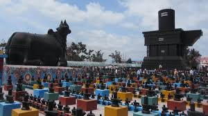

Kotilingala Temple
Kotilingala Temple is a famous ancient Hindu temple located in Warangal, Telangana. It is known for its historic significance and architectural beauty. The temple complex is believed to house numerous Shiva lingas, which attract devotees from various parts of the country.
Location: Warangal, Telangana, India
Ticket Price: Free entry
Transportation: Accessible by road, well-connected by local buses and taxis.